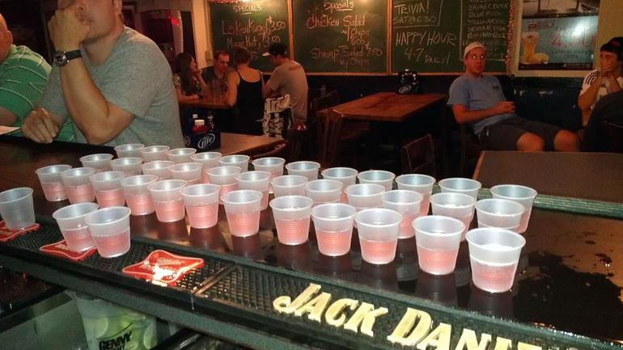

Working at a College Bar in East Lansing
Brianna MattsonWorking as a bartender in East Lansing during my college years is an experience I cannot begin to express my gratitude for. It has taught me more about social life than any class I've taken. Many friends ask if it consumes my schedule, and the truth is yes. I spend many of my free nights working instead of hanging out with friends or studying more. However, the people I've met and the lessons I've learned are invaluable and something I believe every college student should experience. I've learned that my $1.00 tip does matter, even if the bartender is serving 300 other people that night. How I interact with customers at a bar, even one that isn't my own, is remembered and can affect their entire night. I've also learned the importance of standing up for myself. While the saying goes that the customer is always right, it's crucial to maintain a backbone. The company will protect its employees, understanding that drunk people often lack the best judgment. This job has not only taught me about hard work and responsibility but also about empathy, communication, and resilience. For these reasons, I am incredibly grateful for my time as a bartender.

Turning in Homework Late
Brianna MattsonAs a continuation of my last post, I have not yet perfected college/job time management. As you know, much of my time is spent working downtown; however, when I have time off, I need to do homework to graduate college. Being myself, I decided I could definitely get my homework done during my day shifts this week because no one comes in.
What I failed to recognize was that the annual Moms of East Lansing gathering is right in front of my work. This caused a busy couple of days at work and no downtime to do my homework. It also did not help that I scheduled myself (yes, I do the schedule and knowing I am taking summer classes scheduled myself almost every day...) doubles all week. This is why I am writing this post a day late for my assignment, realizing this is a burden to my professor who takes time out of his summer to teach this class. I would like to formally apologize to him, as this is not a reflection of myself as a student and is very abnormal for me. I will be making sure to do my homework earlier in the week for the remainder of this class to show him how devoted I am to this class. I am also putting this as a message to all student workers: manage your time better than me because then you will not lose unnecessary points. Below I have made a schedule to when I will be finishing the remaining assignments for this summer session.
| Date | Assignment | Day turn in |
|---|---|---|
| 6/10-6/16 | add CSS to your blog | 6/12 |
| 6/17-6/23 | week 5 assignment | 6/20 |
| 6/23-6/26 | final project | 6/26 |